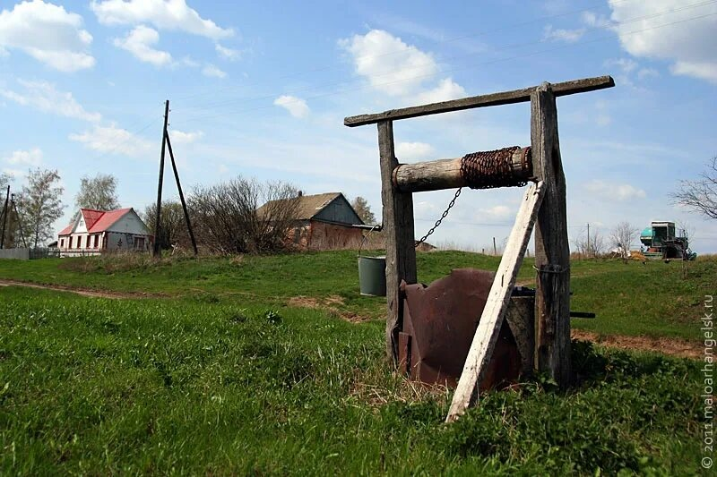
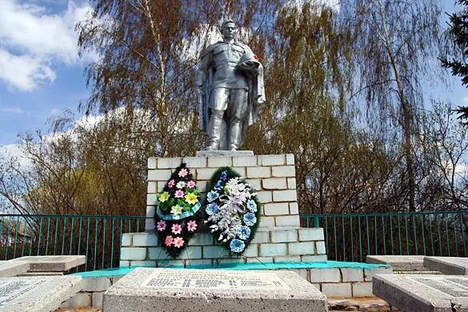
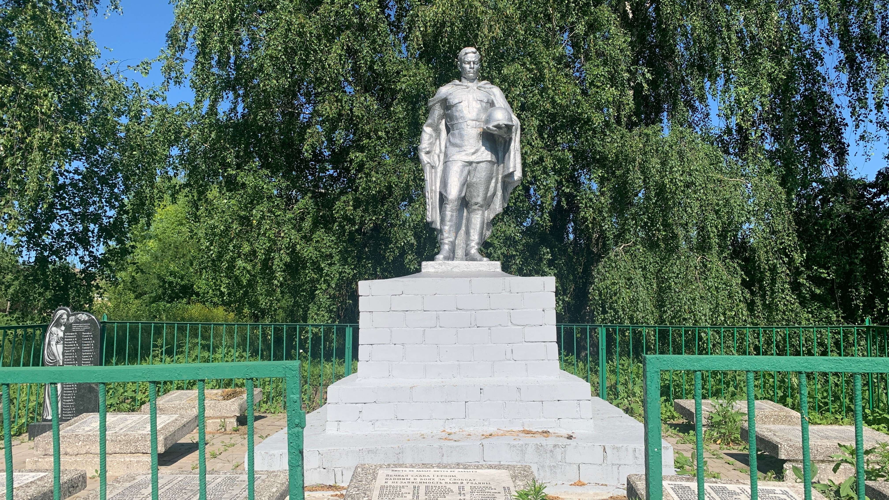

Добро пожаловать в Александровку!
Александровка — небольшая деревня Малоархангельского района Орловской области. У каждого населённого пункта есть своя история: судьбы жителей, семейные предания, трудовые будни и события, которые оставили след в памяти поколений.
Этот сайт посвящён прошлому и настоящему нашей деревни. Его цель — сохранить воспоминания и собрать воедино доступные сведения об Александровке.
История Александровки
История Александровки складывалась на протяжении многих поколений. Менялись времена, административные границы, уклад жизни, но деревня оставалась домом для своих жителей.
О прошлом напоминают старые дома, рассказы местных жителей, документы и семейные воспоминания. Часть истории ещё предстоит восстановить по архивным материалам.
Кирпичная история
Александровка и соседняя Каменка известны необычными кирпичными домами. В прошлом возле некоторых домов находились специальные горны, в которых обжигали кирпич.
Кирпичное строительство стало заметной особенностью этих мест. Старые постройки до сих пор напоминают о мастерстве и труде прежних поколений.
Предание о князе Куракине
Существует местное предание о том, что в начале XVIII века князь Куракин переселил сюда людей из северных губерний.
Ленинский сельсовет
4 декабря 1918 года был образован Ленинский сельсовет. В июне 1954 года Ленинский и Каменский сельсоветы объединились.
Эти события отражают изменения административной жизни территории, к которой относилась Александровка.
Александровка в годы войны
Великая Отечественная война стала тяжёлым испытанием для Орловской земли. Военные действия затронули и территорию Малоархангельского района.
В военной хронике района Александровка упоминается в записях, связанных с событиями 1943 года.
Оккупация
Период оккупации оставил глубокий след в истории Орловской области. За каждой записью в военной хронике стоят судьбы людей, переживших тяжёлое время.
Подробные сведения именно об Александровке требуют дальнейшего изучения архивных документов и воспоминаний жителей.
Освобождение Александровки
В районной хронике указаны две даты, связанные с Александровкой:
19 марта 1943 года — упоминается 15-я стрелковая дивизия.
26 июля 1943 года — упоминаются 74-я, 81-я и 148-я стрелковые дивизии.
Источник: Хроника освобождения Малоархангельского района
Александровка после войны
После окончания войны жизнь постепенно возвращалась к мирному ритму. Люди восстанавливали хозяйство, работали, растили детей и занимались повседневными делами.
История послевоенной Александровки — это прежде всего история труда, семей и нескольких поколений сельских жителей.
Школа и медицинский пункт
В Александровке работала начальная школа. По имеющимся сведениям, она продолжала работу до 2009 года.
В материалах о деревне также упоминается медицинский пункт. Школа и медицинская помощь были важной частью жизни местных жителей.
Архивные документы
В каталоге Государственного архива Орловской области имеются описания документов Ленинского сельсовета послевоенных лет.
Эти материалы могут помочь подробнее восстановить историю деревни, её жителей и повседневную жизнь в послевоенное время.
Александровка сегодня
Сегодня Александровка продолжает жить своей жизнью. Для одних это родная деревня, для других — место, где жили родители, бабушки и дедушки.
Сохранение истории, фотографий и воспоминаний помогает не потерять связь между прошлым и настоящим.
Численность населения
Данные о численности населения за разные годы помогают увидеть, как менялась жизнь деревни.
Фотографии Александровки
Здесь можно собрать фотографии деревни: старые дома, улицы, природу, памятные места и снимки разных лет. Нажмите на фото, чтобы увеличить.



Александровка на карте
Здесь можно посмотреть расположение деревни Александровки в Малоархангельском районе Орловской области.